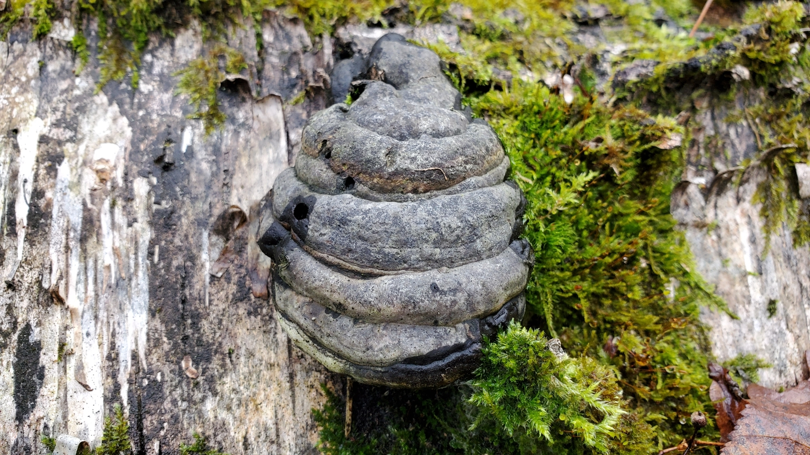
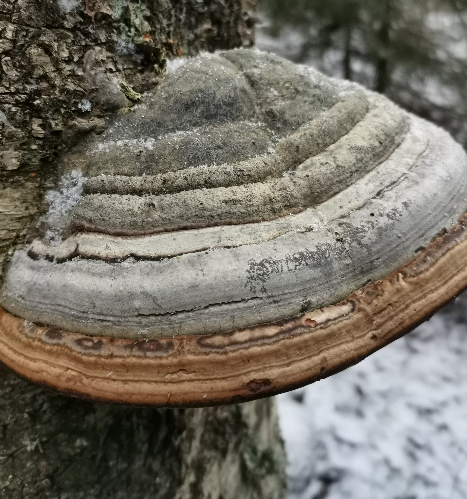
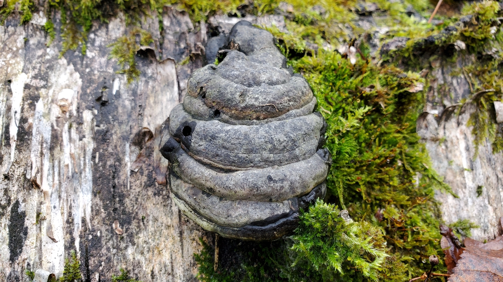
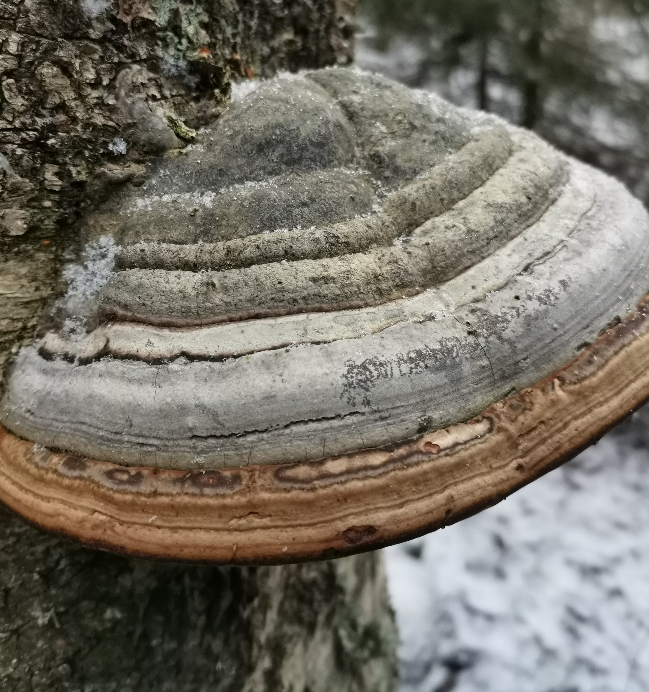
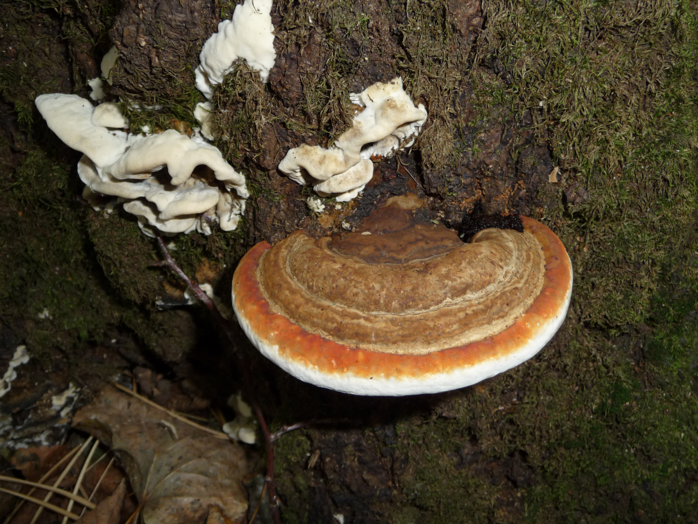
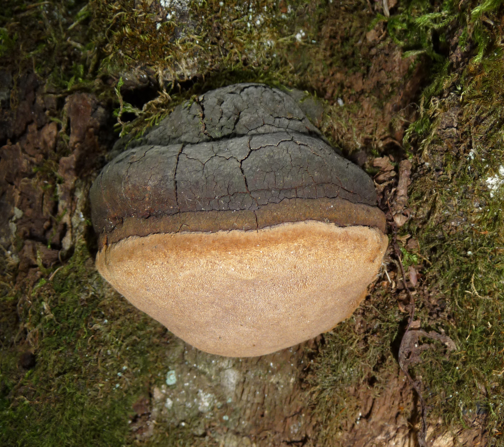

Charakterystyka
| Cecha | Opis |
|---|---|
| Kapelusz | Ma szerokość do 50 cm, początkowo jest bulwiasty, później kopytowaty. Na górnej stronie okryty jest twardą i niepękającą skorupą. U młodych okazów jest ona aksamitna, u starszych naga i matowa. U młodych okazów ma kolor gliniasty lub czerwonobrązowy, u starszych szary lub czarniawy. Na skorupie widoczne są koncentryczne kręgi będące strefami przyrostu rocznego. Brzeg kapelusza jest białawy i tępy. |
| Rurki | Ułożone wielowarstwowo, długości 2–7 cm. Początkowo są jasnopomarańczowe, później pomarańczowobrązowe, na koniec ochrowobrązowe. Po ugnieceniu ciemnieją. |
| Miąższ | Grubości 0,5–3 cm. Jest rdzawobrązowy, miękki, korkowato-drewnowaty, w kapeluszu ma strukturę zamszowatą, w miejscu przyrośnięcia grzybnię wegetatywną. |
| Zarodniki | 15 - 20 x 5.5 - 6.5µm, gładkie. Wysyp nieamyloidalny. Zarodniki podłużnie eliptyczne, gładkie. |
Dlaczego jest niejadalny?
Miąższ twardy i włóknisty
Nie nadaje się do gotowania ani suszenia
Może powodować dolegliwości żołądkowe
Brak wartości odżywczych typowych dla grzybów jadalnych
Występowanie
Kiedy?

Cały rok.
Gdzie?

Pnie starych drzew, w szczególności buków i brzóz. Można go spotkać we wszystkich typach lasów, również w nadrzecznych łęgach.
Do rozpalania ognia
Z jego miąższu wytwarzano tampony do tamowania krwawień
Używany do tworzenia odzieży
Zastosowania
Jako środek do dezynfekowania ran, skaleczeń, czy też oparzeń
W medycynie ludowej jako lek na bóle głowy, zębów
Pozyskiwano z niego farbę do barwienia siatek
Gatunki podobne

Pniarek obrzeżony
Pniarek ma bardziej jaskrawą strefę przyrostu i czerwonobrązowy miąższ. Co ciekawe, można te gatunki rozróżnić za pomocą zapałki - skorupa pniarka obrzeżonego pod wpływem wysokiej temperatury topi się, u hubiaka zwęgla.

Czyreń ogniowy
W przeciwieństwie do hubiaka pospolitego czyreń ogniowy rośnie głównie na wierzbach.